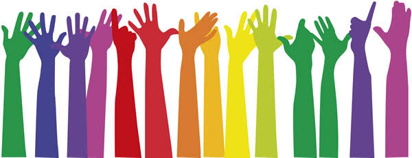

|
AADHAR Foundation
|
Our Work
We are basically working to fulfil educational needs of poor students in urban area as well as students in Adivasi Padas like Mokhada,Dahanu and Shahpur in Thane District. Aadhar has arranged around 20 events at various places like orphanages, Old Age home, Balikashrams, Special Kids School etc.
we are connected with:
- Rajmata Jijau Charitable School(Andheri)
- we donate notebook and books for the needie stiudent.we provide all education help to 30 students under DATTAK YOJANA
- J.P. HOSPITAL
- we provide 50 % amount of total cost in the operation to poor people.blood bank is available on second floor
- DHARAVI Kalamanch
- we provide platform to encourage talent in poor people like street play,dance competition ,etc.
- Educational Help
- Provided Educational and Financial help to 3 families in Kanjur.
Admission to Night College of 2 Students from Bhandup Vikas Night School.
- Social Awareness Events
- Aadhar has celebrated different festivals like Holi,Chirstmas,Rakshabandhan etc. at various Orphanages,Balikashrams and Old Age Home.
-
